Professor
| 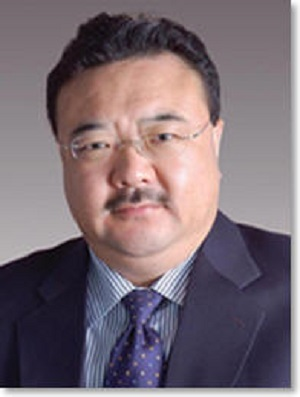 | Max Q.-H MengProfessor Chairman of Electronic Engineering, CUHK E-mail: max@ee.cuhk.edu.hk Homepage: http://www.ee.cuhk.edu.hk/~qhmeng/ Research focus: quadrotor Supervisor: Max Qing-hu MENG |
Postdoctoral
| 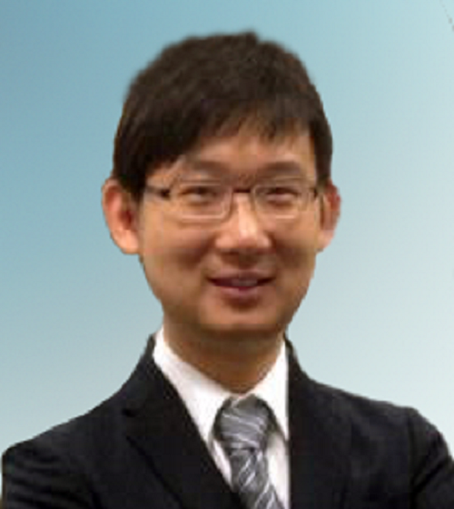 | Jiaole WANGPhD, the Chinese University of HongKong Master, University of Fukui, Japan, 2010 E-mail: jlwang@ee.cuhk.edu.hk Homepage: www.ee.cuhk.edu.hk/~jlwang Research focus: Biomedical engineering, medical and surgical robotics, and robotics in general Supervisor: Max Qing-hu MENG |
 |
Yuxiang SUNPhD, the Chinese University of HongKong Master, University of Science and Technology of China, China, 2012 E-mail: yxsun@ee.cuhk.edu.hk Homepage: http://www.ee.cuhk.edu.hk/~yxsun/ Research focus: Visual SLAM, Computer Vision, Mobile Robots, Non-parametric Modelling, Robotic-Assisted Surgical Navigation Supervisor: Max Qing-hu MENG |
| 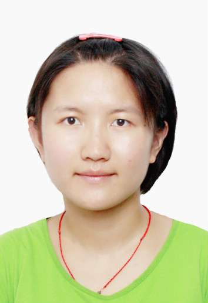 | Tingfang YANPhD, Biorobotics, Scuola Superiore Sant’Anna, Italy, 2016 Master, Control Science and Engineering, Shandong University, China, 2014 E-mail: tfyan@ee.cuhk.edu.hk Research focus: Assistive exoskeletons, rehabilitation robotics, gait dynamics Supervisor: Max Qing-hu MENG |
PhD
| 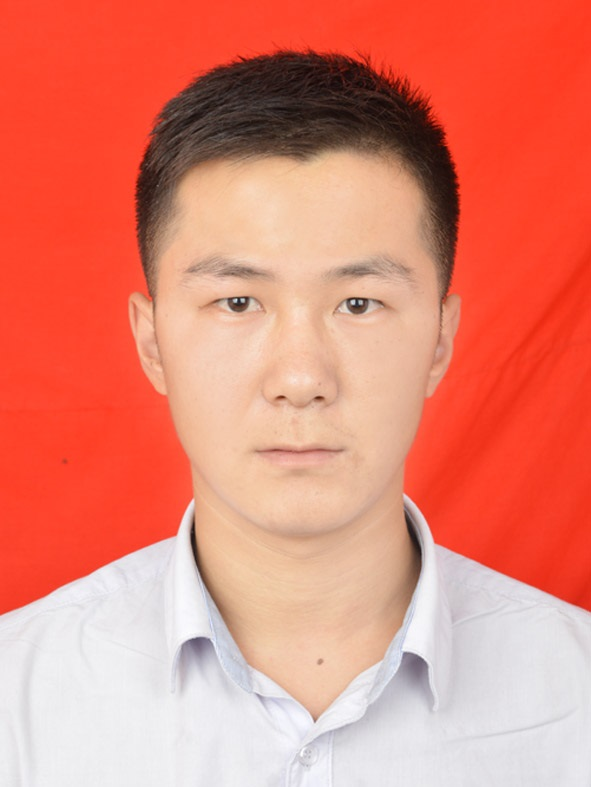 | Jiyu CHENGPhD Student Bachelor, Shandong University, China, 2015 E-mail: jiyu199284@163.com Research focus: quadrotor Supervisor: Max Qing-hu MENG |
| 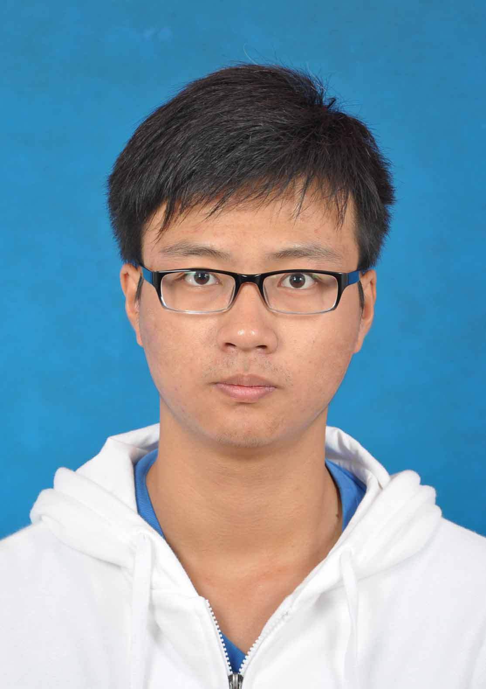 | Hu CHENGPhD Student Bachelor, ortheastern University, China, 2016 E-mail: hcheng@link.cuhk.edu.hk Research focus: 6D pose estimation, Human-Robot Interaction, Deep Reinforcement Learning Supervisor: Max Qing-hu MENG |
Wenzheng CHIPhD Candidate Bachelor, Shandong University, China, 2013 E-mail: wzchi@ee.cuhk.edu.hk Research focus: Human-Robot Interaction, Robot Perception Supervisor: Max Qing-hu MENG |
| 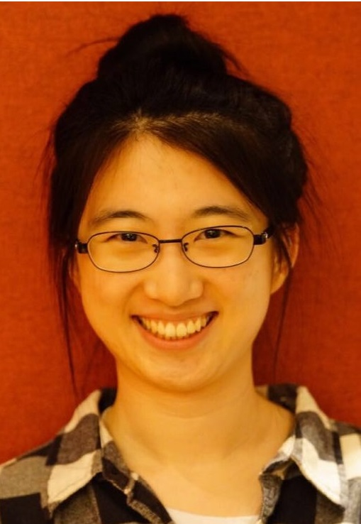 | Xiao JIAPhD Candidate Bachelor, Shandong University, China, 2014 E-mail: xjia@ee.cuhk.edu.hk Homepage: http://www.ee.cuhk.edu.hk/~xjia/ Research focus: Wireless capsule endoscopic image processing Supervisor: Max Qing-hu MENG |
| 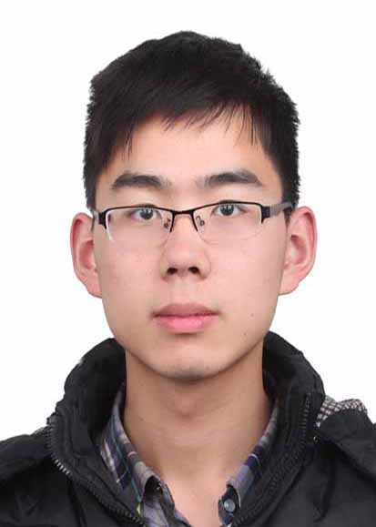 | Tingguang LIPhD Student Bachelor, Nanjing University, China, 2016 E-mail: tgli@ee.cuhk.edu.hk Research focus: Deep Reinforcement Learning in Robotics, Mobile Robotics Supervisor: Max Qing-hu MENG |
| 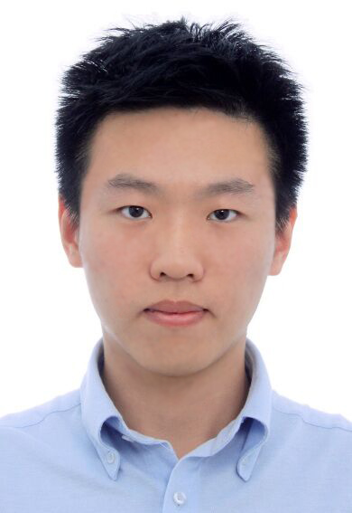 | Xintong LIPhD Student Bachelor, Northeastern University, China, 2015 E-mail: xtli@ee.cuhk.edu.hk Homepage: http://www.ee.cuhk.edu.hk/~xtli/ Research focus: Artificial Intelligence, Machine Learning, Robot Vision and Natural Language Processing Supervisor: Max Qing-hu MENG |
| 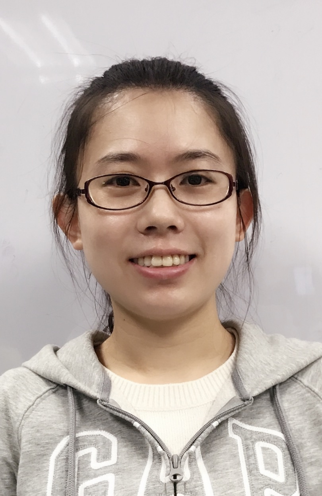 | Tingting LIUPhD Candidate Bachelor, Shandong University, China, 2013 E-mail: ttliu@ee.cuhk.edu.hk Homepage: http://www.ee.cuhk.edu.hk/~ttliu/ Research focus: Human intention recognition based human-robot cooperation Supervisor: Max Qing-hu MENG |
| 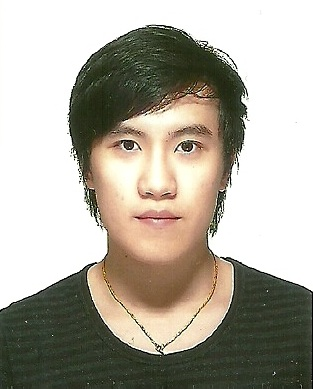 | Frank Po Wen LOMPhil Student Bachelor, The Chinese University of Hong Kong, Hong Kong, 2015 E-mail: powenlo@yahoo.com.hk Research focus: Body sensor network, biomedical signal processing, medical instrumentation Supervisor: Max Qing-hu MENG |
| 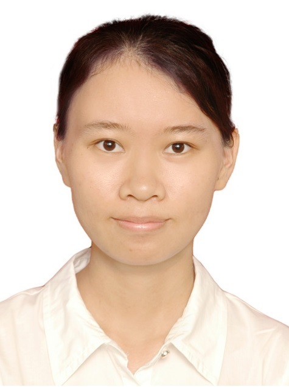 | Xiaochun MAIPhD Candidate Bachelor, Jinan University, China, 2014 E-mail: xcmai@ee.cuhk.edu.hk Homepage: http://www.ee.cuhk.edu.hk/~xcmai/ Research focus: Crop disease/pest detection and identification with UAVs, Precision Agriculture Supervisor: Max Qing-hu MENG |
Zhe MINPhD Candidate Bachelor, Shandong University, China, 2014 E-mail: zhemincuhk@gmail.com Homepage: http://www.ee.cuhk.edu.hk/~zmin/ Research focus: Multi-camera surgical instrument tracking, surgical navigation and image-guided surgery Supervisor: Max Qing-hu MENG |
| 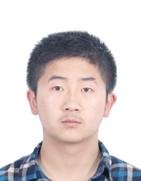 | Jin PANPhD Student Bachelor, Xi'an Jiaotong University, China, 2016 E-mail: jpan@ee.cuhk.edu.hk Research focus: --- Supervisor: Max Qing-hu MENG |
| 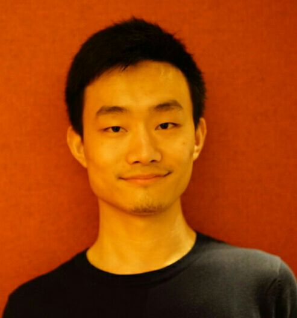 | Chaoqun WANGPhD Candidate Bachelor, Shandong University, China, 2014 E-mail: zychaoqun@gmail.com Research focus: 3D path planning, multi-agent system Supervisor: Max Qing-hu MENG |
| 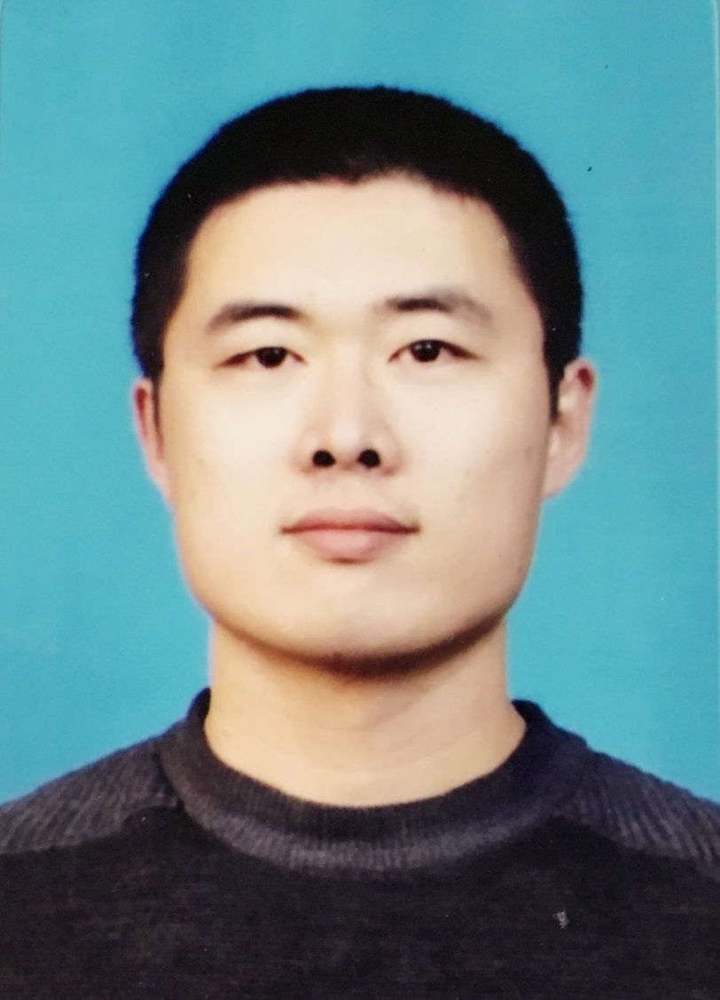 | Jiankun WANGPhD Student Bachelor, Shandong University, China, 2015 E-mail: jkwang@ee.cuhk.edu.hk Research focus: Robot Motion Planning, Human-Robot Interaction Supervisor: Max Qing-hu MENG |
| 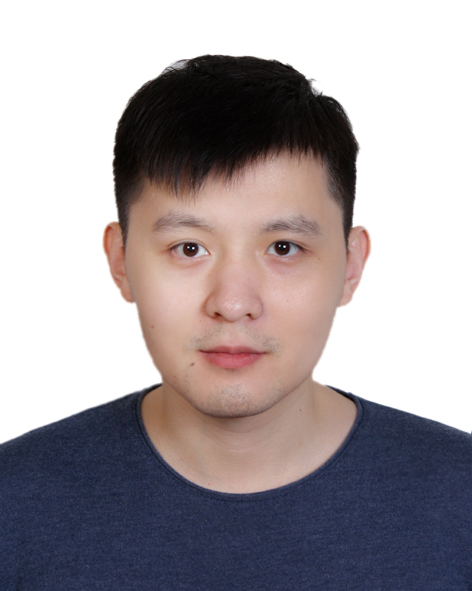 | Yue ZHOUPhD Candidate Bachelor, University of Hong Kong, Hong Kong, 2010 E-mail: yzhou@ee.cuhk.edu.hk Research focus: Surgical robotics for N.O.T.E.S Supervisor: Max Qing-hu MENG |
Delong ZHUPhD Student Bachelor, Northeastern University, China, 2015 E-mail: dlzhu@ee.cuhk.edu.hk Research focus: Service Robot, Reinforcement Learning, Sensorimotor System, Active Interaction Supervisor: Max Qing-hu MENG |